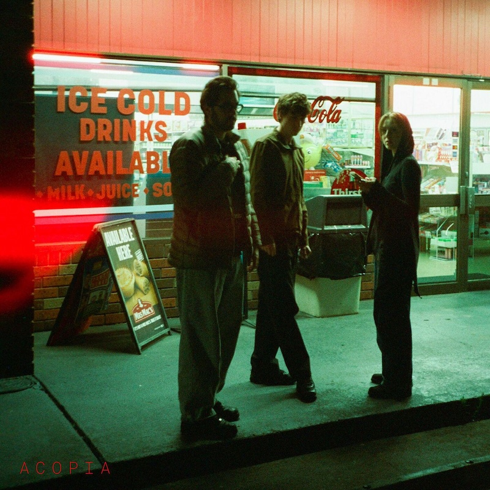

Jan. 8, 2025
Acopia are a band from Melbourne Australia with that time honoured line up of one girl and two guys. This eponymous album is their second and it’s full of slinky electronic ballads that echo classic 90s trip hop. It’s got that same downtempo downbeat vibe, the sorts of songs that revel in sadness but also the joy of a killer bass line.
This album was actually released in November 2023 but I first heard it in January 2024 after reading a glowing review of it. I can remember the first time listening to it, I took the train to see my parents in to hand over a present I’d bought for my nephew. (Fittingly, it’s his birthday today.)
The train journey from Chichester to Portsmouth is a pretty nice one, through countryside, although the Acopia album made me realise how much it has changed over the years. So many houses have been built on what I remembered as fields. I can’t remember why Ingrid didn’t come with me, I sent her a poem about the view by text, no doubt inspired by the mood brought on by this album.
The sour mood of the songs perhaps reflects writers who are writing about the world as it is rather than the world we might want it to be. That means this album has been a pretty good companion in 2024 and might well be again in 2025.
But as stylish as it all sounds, it’s not without substance. There are proper hummable songs here. The best example is probably “Be Enough”, which when it was remixed later on in the year by Daniel Avery grafted on a totally new beat but kept essentially the same song flowing over the top. The Daniel Avery remix also makes me quite excited for what they might be able to do with the greater reach they now have. Hopefully one of the songs on “Acopia” will be picked up for a film soundtrack or a major label might give them a go.
I also bought a copy of the album in its first non-Australian pressing and I’m not usually one to say that things sound better on vinyl, but it does sound bloody marvellous. So nice to have something brought into the physical analogue realm from the digital in a reverse to the direction of travel. (A similar experience to getting hold of the James Holden and Maara albums last year.)

Because I’ve loved so many albums this year, after each review I am going to include a couple of pointers to additional albums that you might enjoy if you like the album in the main review. This is not me showing off (well, not much), but rather giving credit to the many excellent albums released this year!
It’s easy to listen to an album loads if you fall asleep to it. And it’s really easy to fall asleep to A LA SALA, the th album by Khruangbin. They’re a Texas trio inspired by all forms of world music, though this album sounds a little bit a Zero 7 remix album: the songs are all iterations of one another, resolutely downtempo with barely discernible vocals. It shouldn’t work but somehow it does, at least if you’re in the mood for that kind of thing (or are hosting a swanky dinner for your friends).
Similarly, this album by the brilliantly named Th Blisks, features vocals that are smothered in reverb and could be samples for all you’re able to make out the words as you listen. The effect is kind of like the Cocteau Twins or maybe just any 90s trip hop band caught in a massive cavernous dub mix. It’s totally chill and works really well if you’re in the mood for that kind of thing (or are hosting a swanky dinner for your friends).